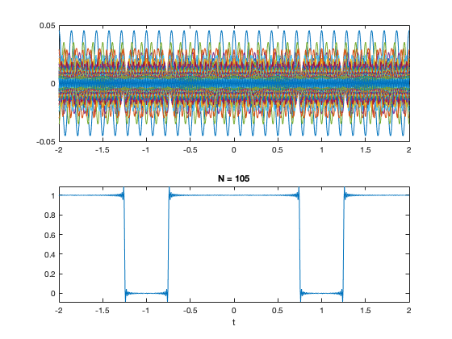

% fs1.m : FOURIER SERIES - PERIODIC RECTANGULAR PULSE SIGNAL % Periodic Pulse Signal Convergence (105) % Longest convergence due to the instantaneous spike characteristics of a % pulse signal which needs a cos(infinity) for the vertical line % resulting in the Gibb's Phenomena => continuously differentiable % periodic function has a jump discontinuity resulting in "ears" T = 2; % T = period Tp = 1.5; % Tp = width of pulse t = -T:0.005:T; % t = time axis wo = 2*pi/T; % fundamental frequency c0 = Tp/T; % from the formula for c(k) x = c0*ones(size(t)); % DC component of x(t) figure(1) clf for k = 1:105 figure(1) subplot(2,1,1) ck = Tp/T*sinc(k*wo*Tp/2/pi); % the formula for c(k) xk = 2*ck*cos(k*wo*t); % Plotted y value plot(t,xk); % Aggregate plot of all cos functions hold on x = x + xk; % Next Iteration by adding next xk subplot(2,1,2) hold off plot(t,x) % Plot of mimicked pulse wave xlabel('t') title(['N = ',num2str(k)]) pause(0.2) end